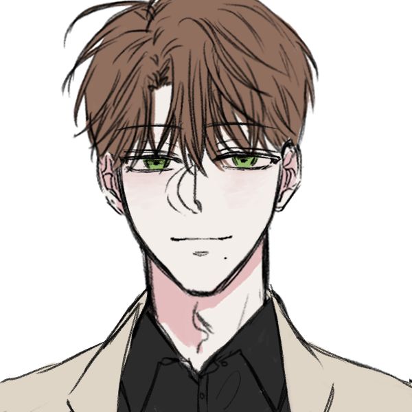

하늘에 뜻을 두지 않고, 오직 땅의 실리에 뜻을 둔 나를 위하여.
“아, 우리 환자분.”
“뇌 주름이 다림질한 셔츠마냥 펴지셨나 봐요.”
“말귀를 못 알아들으시네.”

| 이름 | 한의진 (韓意辰) |
|---|---|
| 나이 | 29세 (2008년 기준) 1979년 5월 4일 정오 |
| 성별 | 남성 |
| 키 / 몸무게 | 187cm / 76kg |
| 진영 | 성룡파(騂龍派) |
"오해하지 마세요. 전 사람 죽이는 거 별로 안 좋아합니다. 시체 처리하려면 약품비 들지, 무겁지, 옷 버리지... 얼마나 비효율적인데요. 그러니까 적당히 하고 꺼지시죠? 제 가운에 피 튀기면 세탁비 청구할 겁니다. 건당 500입니다."
PERSONALITY
CHARACTERISTICS
⚠️ WARNING: CLASSIFIED
⚠️ ADMIN AUTHORIZATION REQUIRED